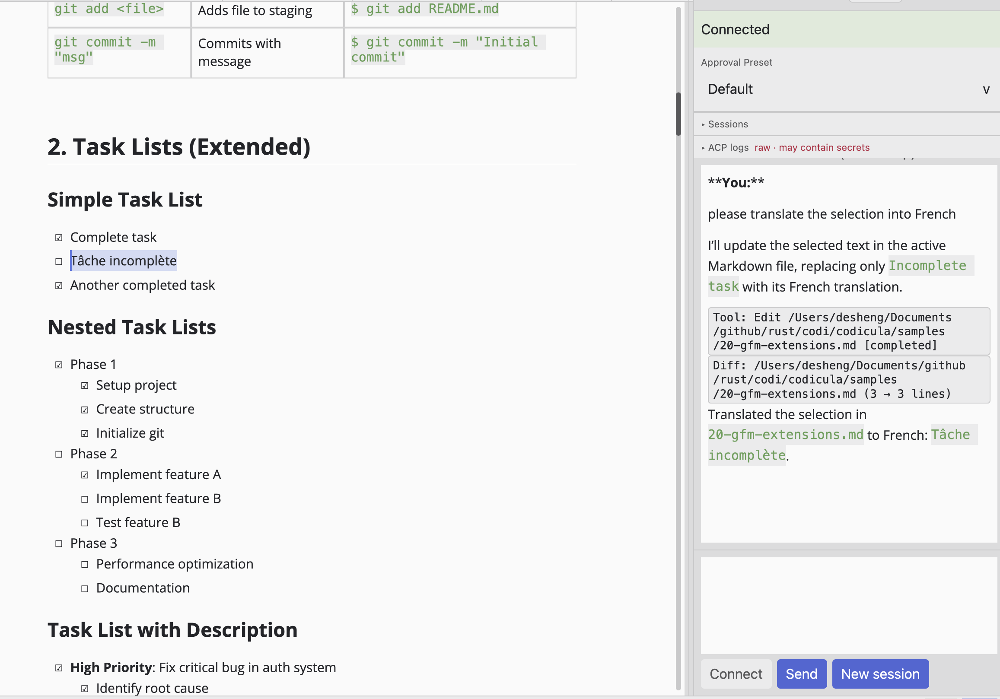
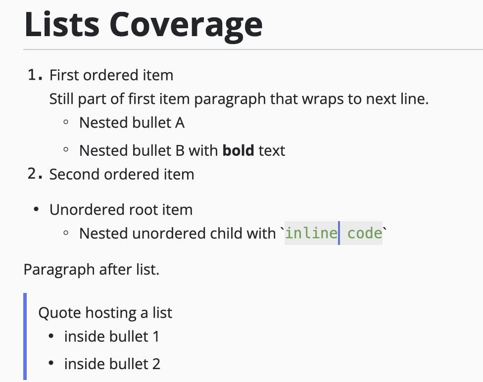
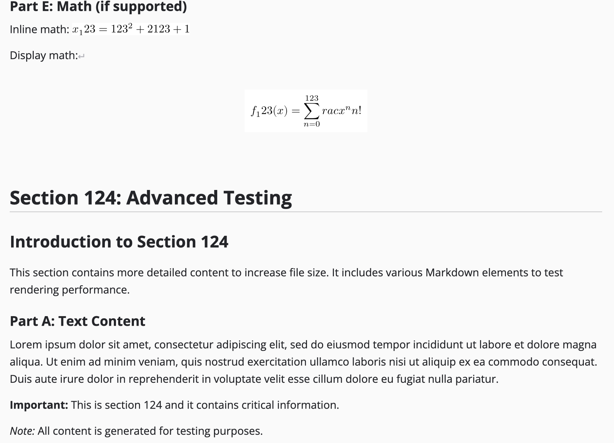
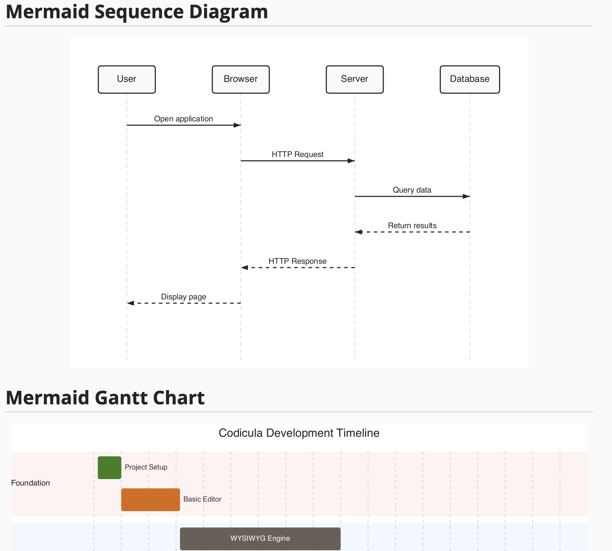

Built on a real parsing/rendering stack (GFM + tables + tasks + math), special renderers (Mermaid, Typst/MiTeX),
and mode routing that refuses to jank on large documents.

What we’re building
Codicula is an experiment in “how far can we get with vibe coding” — without hand-writing the whole editor —
while still chasing the boring, hard constraints: correctness, smoothness, and a UI that feels native.
Agent / ACP workflows
Connect coding agents (Claude, Codex) over the Agent Client Protocol — right next to the document you’re editing.
WYSIWYG Markdown (GPUI)
Render blocks/inline into a real layout, with cursor + selection + undo/redo.
Large-file mode routing
Edit ≤ 2 MiB. Rendered read-only ≤ 5 MiB. Fall back to text view beyond that.
Chunked parsing
Parse from rope chunks to avoid full document materialization in hot paths.
Math + Mermaid
Dedicated renderers for display math and Mermaid flowcharts, with caching.
Export pipelines
Export to PDF (via Typst) and DOCX — single documents, or whole mdBook projects published to one PDF or DOCX.
Safe media viewing
Async image loading with budgets, plus sandboxed SVG rendering policy.
Agent / ACP workflows
Codicula speaks the Agent Client Protocol, so external coding agents live in a panel
beside your editor — with the active document as context, not copy-paste.
ACP agent panel
Discover and connect agents, pick a server, start sessions, send multi-line prompts, and scroll the transcript — all in-app.
Claude & Codex, built in
Managed well-known adapters for Claude and Codex, with safe install/spawn handling across platforms.
Active-document context
The agent sees the document you’re editing; file writes refresh the open tab while preserving your cursor and scroll.
Permission modes that stick
Per-provider permission / approval presets, remembered per agent in agents.toml and re-applied on reconnect.
ACP registry
Browse the public ACP registry from the server picker, then install or remove agents as managed servers.
Custom agents
Bring your own agent via agents.toml with per-agent command, args, env, and defaults.
Screenshots
A look at WYSIWYG editing, large-document handling, and first-class math & diagrams.

Editing
WYSIWYG layout, selection, and “feels-native” cursor movement.

Big docs
Mode routing that keeps interaction predictable instead of pretending everything is editable.

Math + diagrams
Display math and Mermaid flowcharts rendered as first-class blocks.
Micro-demos
Short, silent loops of the editing and export flows in motion.
Editing loop
Export loop
Latest Release
CI/CD publishes: Windows MSI, macOS universal DMG (+ app ZIP), Linux AppImage.
Every installer bundles codi-cli, the headless Markdown→PNG/PDF renderer
(added to PATH on Windows; in the app bundle / AppImage on macOS & Linux).
Note: Codicula is under very active development (updates are frequent, often on weekends).
The release page is in testing and descriptions may be imperfect. Please use at your own discretion.